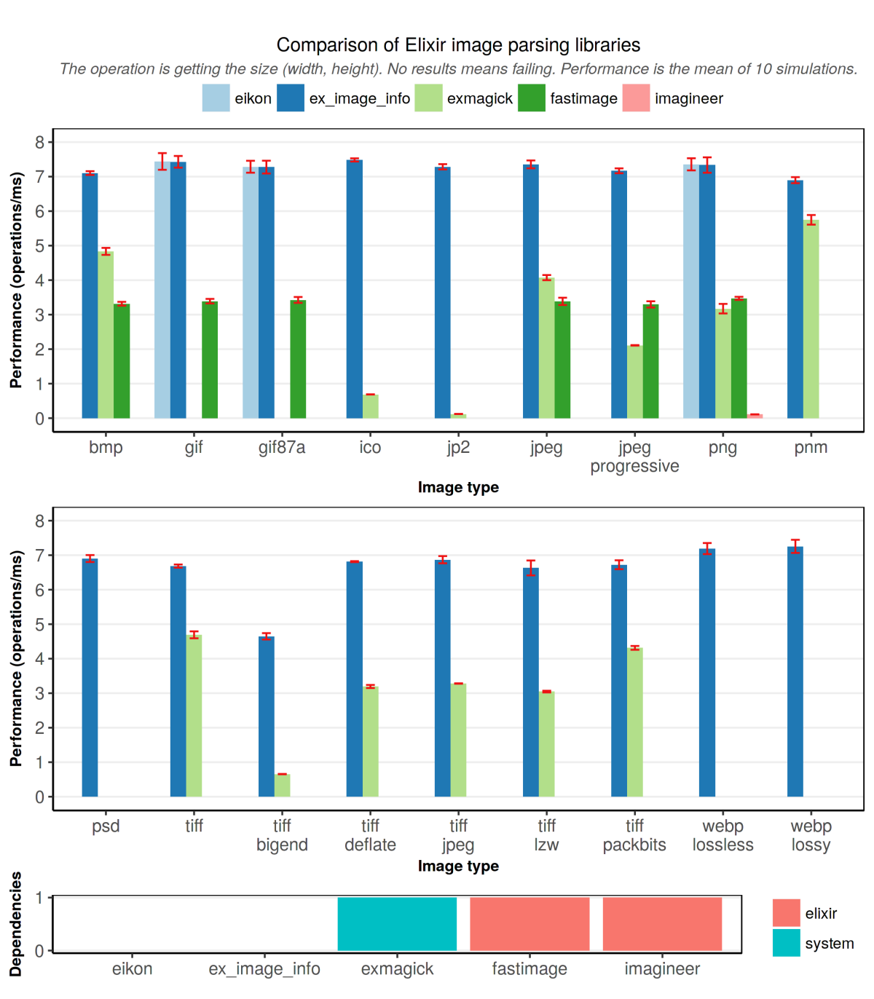

View Source README
ExImageInfo

 <a class="no-underline" href="https://github.com/Group4Layers/ex_image_info"><img src="https://img.shields.io/badge/coverage-98.4%25-green.svg" alt="Coverage"></a> <a class="no-underline" href="https://github.com/Group4Layers/ex_image_info"><img src="https://img.shields.io/badge/tests-58%2F58-green.svg" alt="Tests"></a>
<a class="no-underline" href="https://github.com/Group4Layers/ex_image_info"><img src="https://img.shields.io/badge/coverage-98.4%25-green.svg" alt="Coverage"></a> <a class="no-underline" href="https://github.com/Group4Layers/ex_image_info"><img src="https://img.shields.io/badge/tests-58%2F58-green.svg" alt="Tests"></a>
{kind=link}
{kind=link}
ExImageInfo is an Elixir library to parse images (binaries) and get the dimensions (size), detected mime-type and overall validity for a set of image formats. It is the fastest and supports multiple formats.
Status: 


GitHub repo Docs Hex.pm package
Table of Contents
- Description
- Installation
- Examples
- Benchmarks
- Design decisions
- Acknowledgments
- Author
- Contributors
- ChangeLog
- License
Description
Main module that checks and gets if a binary seems to be an image (specific format), the mime-type (and variant detected) and the dimensions of the image (based on the type).
It has convention functions to guess the type of an image by trying the formats supported by the library.
Main features
- Check the validity of binary by providing a specific image format*.
- Guess the validity of an image*.
- Get the mime-type and variant type by providing a specific format.
- Guess the mime-type and variant type of an image.
- Get the dimensions of an image by providing a specific format.
- Guess the dimensions of an image.
*Note: both cases as a general overview (partially checked).
Formats
Supported formats (image type to be parsed as):
:bmp:gif:ico(new inv0.2.0):jpeg:jpg(alias ofjpeginv0.2.3):jp2(new inv0.2.0):png:pnm(new inv0.2.0):psd:tiff:webp(VP8X animated inv0.2.4)
Mime-types and Variants
The image variant type is an invented string to identify the type of format recognized by this library (more specific than the mime-type).
Each mime-type can be linked to at least one variant type:
| mime-type | variant type | description |
|---|---|---|
image/bmp | BMP | |
image/gif | GIF87a | 87a gif spec |
image/gif | GIF89a | 89a gif spec |
image/x-icon | ICO | |
image/jpeg | baseJPEG | baseline JPEG |
image/jpeg | progJPEG | progressive JPEG |
image/jp2 | JP2 | JPEG2000 |
image/png | PNG | |
image/x-portable-anymap | PNMpbm | Portable BitMap |
image/x-portable-anymap | PNMpgm | Portable GrayMap |
image/x-portable-anymap | PNMppm | Portable PixMap |
image/psd | PSD | |
image/tiff | TIFFII | II variant |
image/tiff | TIFFMM | MM variant |
image/webp | webpVP8 | lossy |
image/webp | webpVP8L | lossless |
image/webp | webpVP8X | animated |
The variant type is created just to provide a bit more of information for every image format (if applicable).
Note: :ico returns the dimensions of the largest image contained (not the first found).
The guessing functions try to detect the format of the binary by testing every available type based on its global usage (popularity, usage of image file formats, but still keeping the :png as the first one):
:png,:jpeg,:gif,:bmp,:ico,:tiff,:webp,:psd,:jp2,:pnm
Warnings:
- Use with caution the formats ico, jp2 and the family pnm. They are implemented without following other libraries (just reading the specs - sometimes working with old drafts like jp2). You can support this library by providing more tests and image fixtures or requesting other variants to be tested.
Installation
Add ex_image_info to your list of dependencies in mix.exs.
From Hex:
def deps do
[
# ...
{:ex_image_info, "~> 0.2.4"},
]
endOr GitHub:
def deps do
[
# ...
{:ex_image_info, github: "Group4Layers/ex_image_info"},
]
endThen, use it:
require ExImageInfo
# ExImageInfo.seems? ...Examples
The following examples are run with the latest version of the library under the next environment:
Erlang/OTP 19 [erts-8.0.2] [source] [64-bit] [smp:8:8] [async-threads:10] [hipe] [kernel-poll:false]
Interactive Elixir (1.3.2) - press Ctrl+C to exit (type h() ENTER for help)
iex(1)>
Feature seems?
89 50 4E 47 0D 0A 1A 0A are the first 8 bytes in the PNG signature (PNG\\r\\n0x1A\\n).
iex(1)> ExImageInfo.seems? <<0x89504E470D0A1A0A::size(64)>>, :png
true
iex(2)> ExImageInfo.seems? <<0x89504E470D0A1A0A::size(64)>>, :webp
falseExImageInfo.seems?/2 and ExImageInfo.seems?/1 does not necessarily needs a real image (as it is shown in the previous example) because it just checks the signature of every file format.
Usually it is used as:
iex(1)> ExImageInfo.seems? File.read!("path/to/image.gif"), :gif
true
iex(2)> maybe_png_binary |> ExImageInfo.seems? :png
false38 42 50 53 are the first 4 bytes in the PSD signature (8BPS).
iex(1)> ExImageInfo.seems? <<0x38425053::size(32)>>
:psd
iex(2)> ExImageInfo.seems? <<0x384250::size(24)>>
nilExImageInfo.seems?/2 and ExImageInfo.seems?/1 does not necessarily needs a real image (as it is shown in the previous example) because it just checks the signature of every file format.
Usually it is used as:
iex(1)> ExImageInfo.seems? File.read!("path/to/image.unknown")
:tiff
iex(2)> webp_full_binary |> ExImageInfo.seems?
:webp
Feature type
89 50 4E 47 0D 0A 1A 0A are the first 8 bytes in the PNG signature (PNG\\r\\n0x1A\\n).
iex(1)> ExImageInfo.type <<0x89504E470D0A1A0A::size(64)>>, :png
nil
iex(2)> ExImageInfo.type <<"RIFF", 0::size(32), "WEBPVP8L", 0::size(32), 0x2F7AC07100358683B68D::size(80)>>, :webp
{"image/webp", "webpVP8L"}The signature part of a png it is now enough to get the type (it check also the IHDR field, just before the width and height).
Usually it is used as:
iex(1)> ExImageInfo.type File.read!("path/to/image.gif"), :gif
{"image/gif", "GIF87a"}
iex(2)> maybe_png_binary |> ExImageInfo.type :png
nilThe guessed version.
iex(1)> ExImageInfo.type <<0x38425053::size(32)>>
{"image/psd", "PSD"}
iex(2)> ExImageInfo.type <<0x384250::size(24)>>
nilUsually it is used as:
iex(1)> ExImageInfo.type File.read!("path/to/image.unknown")
{"image/tiff", "TIFFMM"}
iex(2)> webp_full_binary |> ExImageInfo.type
{"image/webp", "webpVP8"}
Feature info
89 50 4E 47 0D 0A 1A 0A are the first 8 bytes in the PNG signature (PNG\\r\\n0x1A\\n).
iex(1)> ExImageInfo.info <<0x89504E470D0A1A0A::size(64)>>, :png
nil
iex(2)> ExImageInfo.info <<"RIFF", 0::size(32), "WEBPVP8L", 0::size(32), 0x2F7AC07100358683B68D::size(80)>>, :webp
{"image/webp", 123, 456, "webpVP8L"}The signature part of a png it is now enough to get the type (it check also the IHDR field, just before the width and height).
Usually it is used as:
iex(1)> ExImageInfo.info File.read!("path/to/image.gif"), :gif
{"image/gif", 1920, 1080, "GIF87a"}
iex(2)> maybe_png_binary |> ExImageInfo.info :png
niliex(1)> ExImageInfo.info <<0x38425053::size(32)>>
nil
iex(2)> ExImageInfo.info <<0x38425053::size(32), 0::size(80), 10::size(32), 12::size(32)>>
{"image/psd", 12, 10, "PSD"}Usually it is used as:
iex(1)> ExImageInfo.info File.read!("path/to/image.unknown")
{"image/tiff", 128, 256, "TIFFMM"}
iex(2)> webp_full_binary |> ExImageInfo.info
{"image/webp", 20, 100, "webpVP8"}Benchmarks
Group4Layers developed the fastest elixir library to obtain the dimensions of the images (binary data parsed). Also, it excels supporting the maximum number of image formats. All without dependencies.

(The image wouldn't be included in the package).
Design decisions
Why seems? and not magic? or signature??
Because for some formats it is enough with the magic number or the signature to get the type (image format that "starts" correctly), but in other cases it is an algorithm a bit more complex to see if the binary seems correct. Therefore, seems it is more general (than getting the magic number) and it will provide a "quick overview" of the validity of the binary.
Why returning the mime-type and variant type when getting the dimensions (info)?
Because both types (variant if applicable) are necessary to obtain the width and height of the binary for a specific format. In case it is required both the type (and variant) and the dimensions it is not necessary to call two functions (and re-parse part or completely the binary). Therefore, to get the dimensions it is obtained the types and all the information is returned in one step.
Renamed from ExImageSize to ExImageInfo
Although it has been released since the very first version with the name ExImageInfo, this library was previously known as ExImageSize, but it is preferable to have a name less restricted. Nowadays it can get information about the type and the dimensions (size), but in a future it could increase the amount of info to extract from an image.
Acknowledgments
This idea comes from libraries that I have used in other platforms and/or languages. Algorithms and some concepts are picked and based on parts of the following:
- image-size (JavaScript) - Aditya Yadav
- imagesize (Ruby) - Keisuke Minami
- fastimage (Ruby) - Stephen Sykes
Thanks to them.
Author
nozalr nozalr@group4layers.com (Group4Layers®).
Contributors
See CONTRIBUTORS for more information.
GitHub readers (repo, no docs): CONTRIBUTORS.md.
ChangeLog
See CHANGELOG for more information.
GitHub readers (repo, no docs): CHANGELOG.md.
License
ExImageInfo source code is released under the MIT License.
See LICENSE for more information.
GitHub readers (repo, no docs): LICENSE.md.